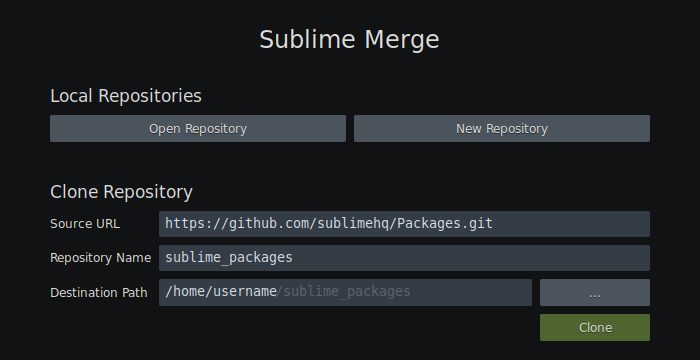
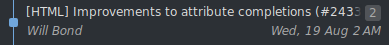
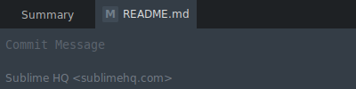
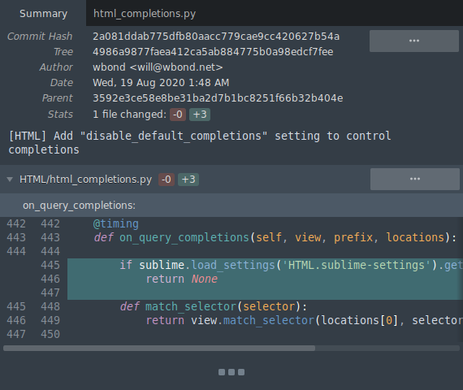
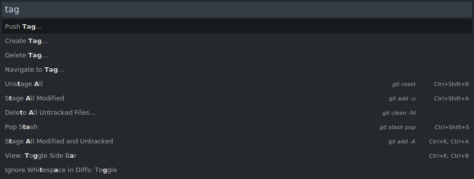
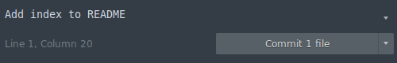
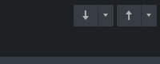
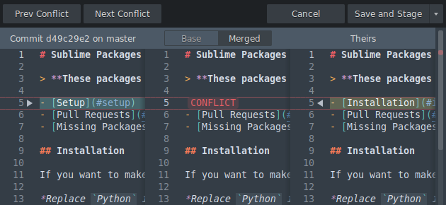

Documentation Getting Started with Sublime Merge
Thank you for using Sublime Merge!
Getting started with Sublime Merge is simple. In this guide you'll be shown all the steps you need to get started.
If you haven't already downloaded Sublime Merge, visit the download page.
Cloning an existing repository
The first step when using Git is usually cloning an existing remote repository. This process will create a copy of a remote repository on your local machine so you can begin making changes. Alternatively, if you're starting a new project, skip to Creating a new repository.
Things you'll need
- The remote repository URL
Example URL: https://github.com/sublimehq/Packages.git - (Optional) the authentication information for the remote repository
(likely the username and password you use to authenticate with the remote service)
Steps to clone a repository
- Navigate to the clone page via File
 Clone Repository….
Clone Repository….
Sublime Merge automatically opens this page on first run (shown below) - Paste the remote repository URL into the input
- Set the local repository path using the input
This is where the repository will be cloned to - (Optional) Change the name of the local repository using the input
This is the name of the repository (stored as a folder on disk) - Select the button
Once the clone has completed, the repository will open automatically in Sublime Merge.
You can now skip to Understanding the interface.
Welcome Page
Creating a new repository
If you're starting a new project, you'll likely instead want to initialize a new Git repository instead.
Steps to create a new repository
- Open Sublime Merge, and select the button
- Select the folder you wish to initialize as a Git repository
Once you've done this, the new repository will open automatically in Sublime Merge.
Welcome Page
Understanding the interface
The Sublime Merge interface consists of two main sections - the and the section.
Overview Section
The overview section is designed to show a summary of the repository.
It contains the column, the column, and the column - each of which will be described below.
Overview Section
Locations
The column displays all branches, remotes, tags, stashes, and submodules contained in the repository.
Each item can be selected to reveal its location in the commit graph (excluding submodules). Each item also has a context menu which displays common actions.
Commits
The column displays a graph of all commits contained in the repository. The commit graph is drawn as a series of commit summaries connected via coloured lines (indicating the topology of the commits).
Each commit summary contains useful information such as the commit message and author, along with any associated branches. The context menu of a commit summary also contains common actions.
Commit summary
When a commit summary is selected, the details of the selected commit are displayed in the section.
Multiple commits can be selected to perform bulk operations such as squashing or dropping commits.
If multiple commits are selected, a diff of the first and last commit will also be displayed in the section.
Files
The column displays a list of all files associated with the current selection.
If no commits are selected, the files list will show all , , , and files.
If a commit is selected, the files list will show all changed files in the selected commit.
Details Section
The details section displays a detailed view of the selected item in the commit graph.
Pending changes
When no commits are selected in the commit graph, the current state of the working directory and index is shown in the details section. From here you can prepare and create new commits.
A diff is displayed for each , , , and file. Each file has an associated tab which can be selected to view the changes to the individual file.
Commit dialog - file tabs
To create a new commit, see Creating a commit.
Commit details
When a commit is selected in the commit graph, the details of the selected commit are shown in the details section.
Commit metadata such as the commit message and author is displayed at the top of this section.
Below the commit metadata is a list of all changed files and their associated diffs (changes).
Commit details
Using the command palette
The command palette is a quick way to access a vast selection of commands available to you in Sublime Merge.
For example, renaming a branch or navigating to a tag
You can open the command palette via Tools Command palette… or via Ctrl + p (Cmd + p for MacOS).
The command palette presents a list of commands which can be filtered by typing portions of the command name you're looking for.
Command Palette
You can also add you're own custom commands to the command palette. (See customizing the command palette)
Creating a commit
Once you have made changes to any local files in your repository, your changes appear in the section.
Modified files appear in the section, and new files appear in the section. To commit new changes to the local repository, you'll first need to stage the changes.
Staging Changes using Sublime Merge
Staging an entire file: select the button at the top of the file
Staging an entire hunk: select the button at the top of the file
Staging individual lines: select the individual lines you wish to stage and select
Staging Lines
Reviewing your changes before committing
You can review staged changes by scrolling to the section of the summary page. Alternatively, you can select each staged file tab to view the file individually.
Committing the staged changes
Begin by entering a commit message using the commit message input located at the top of the screen by default. Once you've entered the commit message, select the button.
Commit Message Input
Fixing and editing commits
You may make a new commit, only to realise you've made a mistake. Maybe the commit message isn't quite right, or you forgot to include a file in the commit.
Sublime Merge has first-class support for editing commits to handle these situations.
Editing a commit message
To edit a commits message, simply open the commit context menu and select Edit Commit Edit Commit Message…
You can now begin typing a new commit message in the section. Once you are happy with the changes, select .
Editing commit contents
Editing the most recent commit
To edit the most recent commit, you can use the functionality.
Begin by editing the files you wish to change in your text editor, and then stage the changes using Sublime Merge. Once the changes have been staged, select the dropdown button next to the commit button and select .
Git will now combine the staged changes with the previous commit.
Editing older commits
If you want to edit older commits, you can use the functionality.
Locate the commit you want to edit, open the context menu, and select Edit Commit Edit Commit Contents…
The selected commit will be undone, and you'll have a chance to update the commit contents. Once you're happy with the changes, re-commit them using the button.
Select the button to complete the edit. If you make a mistake and want to abort the edit, select the button.
Note that editing older commits may produce merge conflicts which will need to be resolved. See Resolving merge conflicts.
A note about editing commits
Editing a commit makes an entirely new commit and hides the old commit (due to the way Git works). Additionally, editing a commit locally won't update any remote commits. If the commit you are editing has already been pushed to the remote repository, proceed with caution.
If this is the case, you'll need to push the updated commit by performing a (available in the advanced push menu). This tells the remote repository to overwrite the remote commits with the updated commits (provided nobody has updated the remote commits in the meantime).
Creating a branch
Creating a new branch via the command palette
Open the command palette (see Using the command palette) and select
Creating a new branch via the commit graph
Open the context menu of an existing commit in the commit graph and select
Creating a local branch from a remote branch
Open the locations bar, and locate the section. Right click the remote branch and select
Pushing and pulling
Pushing and pulling is required to share your work with others. This is done by pushing and pulling commits to and from a remote repository.
Push and Pull Buttons
You can perform a basic pushes and pulls using the buttons located in the top-right corner of the interface. For advanced push and pull options, you can select the dropdown button located next to the main button.
Merging branches
Merge via locations bar
- Locate the branches list in the bar
- In the branches list, locate the branch you wish to merge into the currently checked out branch
- Open the context menu for the given branch and select
Merge via commit graph
- In the commit graph, locate the branch you wish to merge into the currently checked out branch
- Open the context menu for the given branch and select
Merge via command palette
- Open the command palette (see Using the command palette)
- Search for and select
- Locate and select the branch you wish to merge into the currently checked out branch
Resolving merge conflicts
When merging changes to the same file, Git will try to automatically merge the changes. If it can't do this automatically, it marks the file as unmerged and you will have to manually resolve the merge conflict.
To resolve merge conflicts, you can use the merge tool available with Sublime Merge.
Steps to resolve a merge conflict
Locate the unmerged file in the section.
In the unmerged file header, you'll see the button which can be selected to open the merge tool.
Merge Tool
The merge tool consists of 3 columns: on the left, in the middle, and on the right.
Merge Tool
and correspond to the conflicting files, while corresponds to the resulting merged file. can also be selected to display the merge base file.
Conflicting changes are displayed with a CONFLICT marker. You can select which conflicting change to accept using the or button located adjacent to the conflicting hunk.
Once all conflicts have been resolved, you can select to save the merged file and stage it. Alternatively, you can select to abandon the changes.
Adding remotes
To push commits to a remote repository, you may need to add a new remote.
Adding remotes via command palette
Open the command palette (see Using the command palette) and select .
You'll also find and commands within the command palette.
Setting the upstream
The upstream branch tells Git which remote branch to associate with a local branch (and is used to indicate where to push new commits).
Setting upstream branch via command palette
- Open the command palette (see Using the command palette) and select
- Locate the branch you wish to set the upstream for and select it
- Locate the remote branch you wish to set as the upstream and select it
Setting upstream branch via locations bar
- Locate the branches list in the bar
- In the branches list, locate the branch you wish to set the upstream for
- Open the context menu and select
- Locate the remote branch you wish to set as the upstream and select it
Remote authentication
When making changes to a remote repository, it's likely you'll need to provide authentication.
Git supports two connection protocols when accessing a remote repository: HTTPS and SSH.
Each of these protocols requires a different type of authentication, outlined below.
Authenticating via HTTPS
When performing an action that requires authentication on a repository using HTTPS connections, an authentication dialog will be displayed. Enter the username and password used to authenticate with the remote repository, then select the button.
You may not want to enter your credentials every time you perform a push or pull. In this case, you can use Git's built-in password manager to cache the credentials for a certain period of time.
To do this, open Sublime Merge and navigate to Tools Password Caching. You can request that Git stores the credentials for up to a week.
Note that this is only available on Linux and MacOS. For Windows users, you can use Git Credential Manager for Windows. (See https://github.com/Microsoft/Git-Credential-Manager-for-Windows)
Authenticating via SSH
For SSH authentication, Git will try to use the default ssh key stored at ~/.ssh/ to authenticate. You may be asked to unlock your key, in which case you can enter the passphrase associated with the SSH key to continue.
Persistent storage of SSH credentials depends on the operating system. For most Linux distributions, you can automate unlocking your SSH key on start-up. For MacOS, you can add your SSH credentials to the system keychain. To do this, run ssh-add -K PATH_TO_KEY from the console. For Windows, you can use plink / pageant to connect and store SSH credentials.
Windows: setting up PuTTY / plink / pageant with Sublime Merge
This guide assumes you have existing SSH keys you can import into PuTTY. If not, please read this guide first.
- Begin by downloading and installing PuTTY here
-
Once installed, open PuTTYGen and select Conversions Import Key.
- Select your existing RSA key (likely found at ~/.ssh/id_rsa.pub)
- Once imported, save a copy of the private key to the same folder
Now that the key is saved, you can enable plink/PuTTY in Sublime Merge via the preferences.
-
Open Sublime Merge and select Preferences Preferences…
- Navigate to in the preferences dialog.
- Navigate to SSH Path, and set this to the plink system path (likely C:\Program Files (x86)\PuTTY\plink.exe).
Now that Sublime Merge is using plink, the last optional step is to start pageant and load in your credentials. This ensures you don't have to enter your SSH credentials every time you perform a remote operation.
- Start the pageant executable
- Once started, you'll find the pageant icon in the system tray. Right click the icon and select .
- Navigate to and select the private key you saved earlier